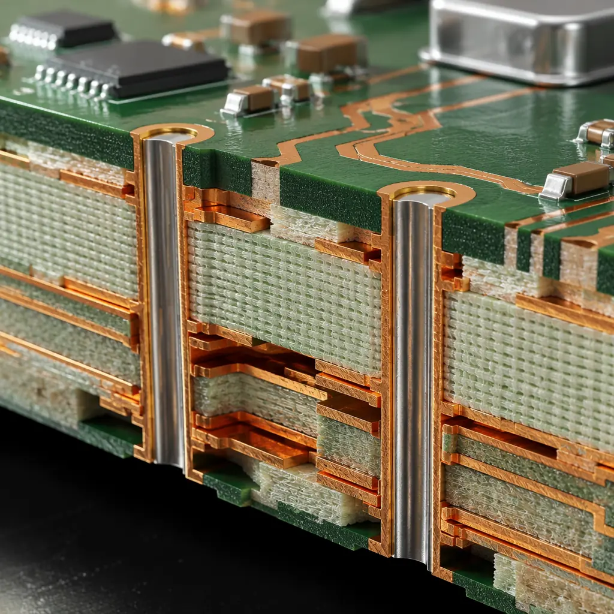

When a PCB inside an electric power steering (EPS) controller fails at highway speed, the outcome is measured in lives, not yield percentages. ISO 26262 — the international standard for functional safety of road vehicles — exists precisely because hardware failures in automotive electronics are not an inconvenience; they are a hazard. Yet in procurement conversations, the software safety case dominates the agenda while the PCB assembly — the physical substrate that carries every safety-critical signal — often gets reduced to a checkbox on a fabrication note. This is a dangerous blind spot.
Huaxing PCBA manufactures automotive-grade PCB assemblies under IATF 16949 certified quality management, supporting ASIL B and C programs with full material traceability, 100% AOI and AXI inspection on safety-critical solder joints, and per-lot microsection analysis. For procurement engineers preparing RFQs for functional safety programs, this guide maps ISO 26262 hardware requirements to the specific PCB manufacturing controls that must appear in your fabrication notes and purchase orders — before production begins.

What ISO 26262 Means for PCB Assembly — Beyond Just the Chip
ISO 26262 addresses functional safety across the entire vehicle E/E system lifecycle, from concept through production to decommissioning. While software safety — covered in Part 6 of the standard — receives the bulk of engineering attention, Part 5 (Hardware) and Part 4 (System) impose requirements that flow directly to PCB design and manufacturing. The standard recognizes two categories of hardware failure that every PCB assembly must address:
Systematic Failures: Design and Process Errors
Systematic failures are deterministic — they result from a flaw in the design, manufacturing process, or operational procedure that would cause failure every time under the same conditions. In PCB assembly, systematic failures include: incorrect creepage distances that create latent short circuits, via placement that creates solder voids under BGAs, and process deviations (e.g., wrong reflow profile) that produce weak solder joints across an entire lot. ISO 26262 mandates that systematic failures be addressed through rigorous design reviews, process validation, and documented manufacturing procedures — not through end-of-line testing alone.
Random Hardware Failures: Probabilistic Defects
Random hardware failures arise from inherent physical processes — electromigration in copper traces, dielectric breakdown, solder joint fatigue — that can occur unpredictably during the vehicle's service life even in a perfectly designed and manufactured board. ISO 26262 quantifies acceptable random failure rates through three hardware architectural metrics that every automotive PCB buyer must understand.
The standard classifies safety functions into four ASIL levels — A (least stringent) through D (most stringent) — based on severity, exposure, and controllability of potential hazards. For ASIL D systems (steering, braking, airbag deployment), the hardware metrics reach their most demanding thresholds: SPFM ≥ 99% (Single Point Fault Metric), LFM ≥ 90% (Latent Fault Metric), and PMHF < 10 FIT (Probabilistic Metric for random Hardware Failures — equivalent to fewer than 10 failures per billion operating hours). These are not aspirational targets; they are compliance thresholds that must be demonstrated with quantitative evidence during the safety case submission.
ASIL Classification Impact on PCB Manufacturing Requirements
The ASIL level assigned to a vehicle function directly determines the manufacturing rigor required for every PCB assembly in that function's signal path. The table below maps ASIL levels to the PCB manufacturing controls that procurement teams must specify:
| ASIL Level | Example System | SPFM Target | LFM Target | PCB Impact |
|---|---|---|---|---|
| ASIL A | Rear-view camera | — | — | IPC Class 2 minimum; standard AOI; basic traceability |
| ASIL B | Adaptive headlights, instrument cluster | ≥ 90% | ≥ 60% | IPC Class 2+ with enhanced inspection; lot-level material traceability; 100% AOI on critical nets |
| ASIL C | Engine management, transmission control | ≥ 97% | ≥ 80% | IPC Class 3; 100% AOI + AXI on safety-critical solder joints; full material traceability to supplier lot; per-lot microsection |
| ASIL D | EPS, ABS, airbag controller | ≥ 99% | ≥ 90% | IPC Class 3; 100% AOI + AXI + ICT; full lot-level traceability with PPAP Level 3; zero-defect process with < 50 DPMO target; 4-wire Kelvin testing on all safety-critical nets |
The jump from ASIL C to ASIL D is particularly significant for PCB manufacturing. Where an ASIL C engine controller PCB might tolerate batch-level traceability and coupon-based microsection sampling, an ASIL D EPS controller demands per-board traceability, per-lot destructive analysis, and process capability indices (Cpk ≥ 1.67) demonstrated on every critical characteristic. Procurement managers unfamiliar with these distinctions often receive quotes that appear competitive but are priced for ASIL B manufacturing rigor — and discover the gap only when the PPAP submission is rejected. For a deeper look at automotive PCB requirements beyond functional safety, see our automotive PCB manufacturing guide.
PCB Design Rules for Functional Safety Compliance
Functional safety begins at the PCB layout stage. ISO 26262-5:2018 Annex D provides informative guidance on hardware design measures, but the following design rules — drawn from IEC 60664, IPC-2221, and industry best practices validated across multiple ASIL C/D programs — represent the minimum that every automotive PCB design must satisfy before fabrication begins:
Creepage and Clearance per IEC 60664-1
Creepage (distance along the surface of the insulating material) and clearance (shortest distance through air) between conductors at different potentials are the first line of defense against systematic insulation failures. For a 48V circuit in Pollution Degree 2 (typical for under-hood electronics), IEC 60664-1 requires a minimum creepage of 0.5 mm and clearance of 0.2 mm for functional insulation — but these values increase significantly for higher voltages and higher pollution degrees. For a 400V traction inverter PCB, creepage requirements can exceed 3.0 mm, requiring slot cuts in the PCB substrate between high-voltage and low-voltage domains. Designs that fail to account for conformal coating's effect on creepage (coating can reduce creepage requirements by one pollution degree) often end up with unnecessarily large board dimensions.
Redundant Vias for Critical Safety Nets
A single via carrying the gate drive signal to a power MOSFET in an EPS controller is a single point of failure. ISO 26262 safety analysis (FMEA/FTA) typically requires redundancy for nets whose failure would violate the safety goal. On PCB designs, this translates to dual or triple redundant vias for critical signals — with each via placed sufficiently far apart (>1.0 mm center-to-center) to avoid common-cause failure from a single drill-bit break or plating void. The additional board area consumed by redundant vias is not optional space; it is safety margin quantified in the hardware metrics calculation.
Comparative Tracking Index (CTI) ≥ 400V Material
The CTI of a PCB substrate measures its resistance to electrical tracking — the formation of conductive carbonized paths across the insulating surface under voltage stress in the presence of contamination. IEC 60112 classifies materials into CTI groups: PLC 0 (CTI ≥ 600V), PLC 1 (400V ≤ CTI < 600V), PLC 2 (250V ≤ CTI < 400V), etc. For ASIL C/D assemblies that may see condensation, road salt, or conductive dust in service, specifying laminate with CTI ≥ 400V (PLC 1 minimum) is a practical requirement, not an aspirational one. Standard FR-4 formulations vary in CTI from < 175V to > 400V depending on resin chemistry — the difference is invisible to visual inspection but critical to long-term safety. For voltage-critical PCB design beyond automotive, see our high-voltage PCB design guide.
Controlled Impedance at ±5% Across Full Operating Temperature Range
Safety-critical communication buses — CAN FD, FlexRay, Automotive Ethernet — rely on precise impedance control for signal integrity. A differential pair designed for 120Ω (CAN) or 100Ω (Ethernet) that drifts by more than ±10% due to laminate Dk variation with temperature can produce bit errors that the safety software interprets as data corruption. For ASIL C/D systems, specify controlled impedance at ±5% tolerance verified by TDR on production panels across -40°C to +125°C — not just at room temperature on a qualification coupon. Our impedance control manufacturing guide covers the test methodology in detail.
4-Wire Kelvin Testing for Critical Power Traces
A standard 2-wire resistance measurement on a power trace that carries 50A to an EPS motor cannot distinguish between a 50 μΩ trace resistance and 50 μΩ of contact resistance in the test fixture — the measurement uncertainty alone can mask a defect. 4-wire Kelvin testing applies known current through one pair of probes and measures voltage drop through a separate pair, eliminating lead and contact resistance from the measurement. For ASIL C/D power distribution traces, specify 4-wire Kelvin testing with resistance tolerance within ±5% of nominal — this catches subtle plating voids, etch narrowing, and cracked traces that pass standard continuity testing but create hot spots during high-current operation.
Procurement Insight: PCB fabricators who have never built for ASIL C/D programs often underestimate the design-rule-check (DRC) file complexity. A standard IPC-2221 DRC file has roughly 40-60 rules. An ASIL D-appropriate DRC file — incorporating creepage/clearance by voltage domain, redundant via spacing rules, controlled impedance with temperature derating, and CTI-based material constraints — can exceed 120 rules. Ask potential suppliers to provide a sample DRC configuration from a previous ASIL C or D project. If they hesitate, they probably don't have one.
Manufacturing Documentation Buyers Must Provide
ISO 26262 is not a manufacturing standard — it is a safety lifecycle standard — but Part 5 places specific documentation requirements on the entity responsible for hardware development. When an automotive OEM or Tier-1 contracts PCB assembly to an external supplier, the following documents must flow from buyer to manufacturer to establish the safety context for production:
Safety Requirements Specification (SRS)
The SRS defines the safety goals for the item (e.g., "EPS shall not produce unintended steering torque exceeding 3 Nm") and allocates these to hardware and software. For the PCB manufacturer, the SRS provides the context for why certain nets are marked as safety-critical on the fabrication drawing. Without it, the manufacturer cannot independently assess whether a process deviation (e.g., a slight via offset on a redundant safety net) is a reportable safety incident or a minor nonconformance. Include the safety goal IDs on fabrication notes next to the corresponding circuit features.
Hardware Safety Requirements (HSR)
The HSR translates the SRS into measurable hardware attributes: "The watchdog refresh signal trace shall have characteristic impedance of 50Ω ±5%" or "The redundant power supply planes shall maintain a separation distance of ≥0.5 mm at all points." These become the pass/fail criteria for PCB electrical test and inspection. For ASIL C/D programs, the HSR should explicitly reference IPC-6012 Class 3 acceptance criteria and specify any tighter requirements (e.g., annular ring minimum of 1.5 mil instead of Class 3's 1.0 mil for plated holes carrying safety-critical signals).
Safety Validation Plan
This document defines how the manufactured PCB assembly will be validated against the safety requirements — including the environmental stress tests (thermal cycling, vibration, humidity), the electrical tests (TDR, hipot, Kelvin), and the destructive physical analysis (microsection, solder joint cross-section) that must be performed on production-representative samples. For ASIL D, the validation plan typically requires ≥ 25 samples tested across 3 non-consecutive production lots to demonstrate process stability. First-article inspection (FAI) as defined by AS9102 or the buyer's own procedure is a critical component of this validation. See our first-article inspection guide for what a compliant FAI report should contain.
PPAP Level 3 Documentation Package
Production Part Approval Process (PPAP) Level 3 — the default for ASIL C/D programs — requires 18 elements including design records, engineering change documentation, D-FMEA and P-FMEA, control plans, measurement system analysis (MSA), dimensional results, material and performance test results, initial process capability studies, laboratory accreditation, appearance approval reports, sample production parts, master samples, checking aids, and a Part Submission Warrant (PSW). The PCB manufacturer's quality team must understand each element — not just the dimensional report — because the P-FMEA and control plan sections define the inspection gates that govern every production lot going forward. For guidance on what a production-quality PCB inspection program looks like, refer to our PCB testing methods comparison.
Critical Distinction: Providing a PPAP Level 3 documentation package is not the same as demonstrating process capability for ASIL D. PPAP confirms that the production process can make parts that meet specification. ISO 26262 additionally requires that the hardware architectural metrics (SPFM, LFM, PMHF) be calculated and shown to meet the ASIL target — and the PPAP dimensional and test data feed directly into those calculations. Buyers who accept a PPAP warrant without reviewing the underlying measurement data that populates the SPFM/LFM analysis are accepting the form of compliance without verifying its substance.
Process Validation & Traceability for ASIL C/D
ASIL C and D programs impose process validation and traceability requirements that exceed standard IPC Class 3 manufacturing by a significant margin. The following controls are not optional for safety-critical PCB assembly — they form the evidentiary chain that supports the safety case:
100% AOI + AXI for All Safety-Critical Solder Joints
Automated optical inspection (AOI) detects visible solder defects — bridging, insufficient solder, tombstoning — while automated X-ray inspection (AXI) reveals hidden defects under BGAs, QFNs, and within plated through-holes that AOI cannot see. For ASIL C/D, both are mandatory on every safety-critical solder joint, not sampled. AXI coverage must include the full BGA ball array (not just perimeter balls) and any QFN thermal pad that serves as a ground connection for a safety-critical component. The inspection data — not just a pass/fail summary — must be archived by board serial number for the vehicle's service life (typically 15 years for passenger vehicles).
Full Material Traceability: Lot-Level to Supplier
When a field failure investigation traces a root cause to a specific laminate batch from a specific supplier on a specific date, the manufacturer must be able to identify every PCB assembly that used material from that lot within 24 hours. This requires a traceability system that links: incoming material certificate → raw material lot number → work order → panel serialization → board serial number → final assembly serial number. Barcode or 2D matrix marking on the PCB edge (outside the functional area) is the standard method — but the traceability database that connects the barcode to the manufacturing history is what makes the system functional, not just the marking itself. For a complete overview of IPC class requirements and how they map to automotive reliability, consult our IPC Class 2 vs Class 3 comparison.
Zero-Defect Philosophy with <50 DPMO Target
ISO 26262 does not prescribe a specific DPMO (Defects Per Million Opportunities) target, but the PMHF requirement for ASIL D (< 10 FIT) implies a defect rate that is orders of magnitude below what conventional SMT manufacturing achieves. A <50 DPMO defect rate — meaning fewer than 50 defects per million solder joints — is the practical threshold for ASIL D PCB assembly, and achieving it requires: statistical process control (SPC) on every critical characteristic, automated SPC alarming (not manual chart review), closed-loop corrective action triggered within hours of an out-of-control signal, and a quality culture that treats every single defect as a process escape requiring root cause analysis — not as an acceptable yield loss. For insight into how PCB defects are analyzed at the physical level, see our PCB failure analysis guide.
Partnering with an IATF 16949-Certified PCB Manufacturer
ISO 26262 compliance is not demonstrated by a certificate — it is demonstrated by evidence generated throughout the product development and manufacturing lifecycle. The PCB manufacturer's role in generating that evidence cannot be outsourced to a quality auditor after the fact. Selecting a manufacturing partner with the right certifications, process infrastructure, and — most critically — experience in generating the evidentiary documentation that safety assessors actually review is the single most impactful decision a procurement manager makes for a functional safety program.
Huaxing PCBA brings IATF 16949 certified quality management, ISO 9001 and UL certifications, and hands-on experience with ASIL B and C automotive PCB assembly programs to every project. Our facility operates 8 SMT lines with 100% AOI and AXI coverage on all production lines, full lot-level material traceability from incoming inspection through final assembly serialization, in-house microsection and cross-section analysis, and 4-wire Kelvin testing capability for power distribution traces. We understand that an ASIL C PCB assembly is not just a board with tighter tolerances — it is a safety artifact whose manufacturing record must withstand scrutiny in a functional safety assessment.
For a comprehensive look at the certifications that matter in PCB manufacturing and how to verify them, refer to our PCB certifications and compliance guide. When you're ready to engage, our engineering team provides a same-day DFM review with safety-critical net identification, impedance analysis across operating temperature range, and a production validation plan aligned to your ASIL level.